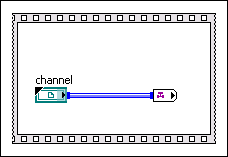

JavaScript is disabled. Details
The channel control cannot be inside a structure. You can place channel writer endpoints and reader endpoints inside a structure, but not channel controls.

To correct this error, you must move the channel control outside of the structure.